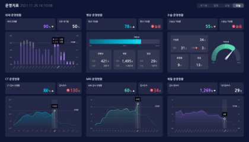

DOCC
DOCC - DATA BASED OPERATION AND COMMUNICATION CENTER
축적된 병원의 실시간 데이터를 중심으로 현장 이슈 모니터링 및 소통 가능한 서비스
검색 버튼
검색 내용 삭제
홈
PAN
즐겨찾기
최근항목
설정
PAN
등록일순
등록일순
이름순
중요도순

PAN 운영 지표
2021.11.12 13:12
CT운영현황 PAN
2021.11.12 13:12
수술운영현황 PAN
2021.11.12 13:12
채혈운영현황채혈운영현황 PAN
2021.11.12 13:12
PAN 운영 지표
2021.11.12 13:12
CT운영현황 PAN
2021.11.12 13:12
수술운영현황 PAN
2021.11.12 13:12
채혈운영현황 PAN
2021.11.12 13:12
이전페이지
01
02
03
04
05
06
07
08
09
10
다음페이지